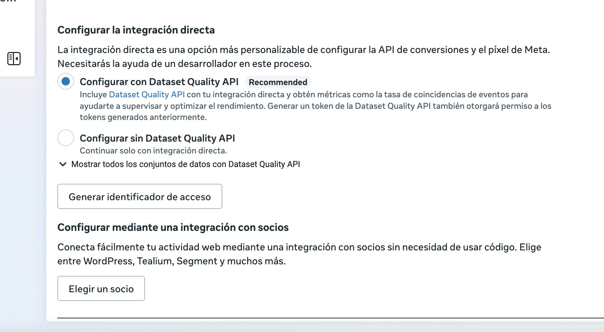

El problema: el píxel del navegador no ve todas tus conversiones.
La solución: enviar los eventos también desde un servidor que controlas tú.
Lo que ganas: más señal para que las plataformas pujen mejor y datos más parecidos a tus ventas reales.
Por qué se pierden conversiones
Durante años, medir era tan sencillo como pegar un píxel en la web. Hoy ese píxel se encuentra con bloqueadores de anuncios, cookies rechazadas, navegadores que limitan el seguimiento e iOS. Según un análisis de Dataslayer, entre un 15 % y un 40 % de las conversiones no llegan a Google Ads ni a Meta por estos motivos.
El efecto no es solo que tus informes se queden cortos. Las campañas automatizadas pujan con esos datos, así que si ven menos conversiones de las reales, toman peores decisiones.
Qué es el tracking server-side
Con el píxel tradicional, el navegador del usuario envía cada evento directamente a Google o a Meta. En server-side, los eventos pasan por un servidor que controlas tú y desde ahí se envían a cada plataforma.
Las piezas más habituales son un contenedor de Google Tag Manager en servidor, la API de conversiones de Meta y las conversiones mejoradas de Google Ads, que añaden datos cifrados como el email para mejorar la atribución.
Las opciones para configurarlo en Meta

Integración directa. Es la más flexible y necesita un desarrollador. Si activas la Dataset Quality API, además ves métricas como la tasa de coincidencia de eventos, que te dice si Meta está reconociendo a los usuarios que le envías.
Integración con socios. WordPress, Shopify, Tealium, Segment y otras plataformas se conectan sin código. Es la opción más rápida si tu web ya está en una de ellas.
GTM en servidor. Es la que uso en la mayoría de proyectos, porque con un mismo contenedor envío los eventos a GA4, Google Ads y Meta y tengo todo el control en un solo sitio.
Tres detalles que marcan la diferencia
Deduplicación. Si envías el mismo evento desde el navegador y desde el servidor, ambos deben llevar el mismo identificador de evento. Si no, Meta contará la conversión dos veces.
Calidad de coincidencia. Cuantos más datos útiles envíes (email, teléfono, siempre cifrados), mejor podrá la plataforma atribuir la conversión. En Meta lo ves en la puntuación de calidad de coincidencia de eventos.
Consentimiento. El server-side no es una forma de saltarse las cookies. Configúralo con Consent Mode v2 y envía solo los datos que tengas permiso para usar.
Qué cuesta mantenerlo
El contenedor de servidor necesita alojamiento, en Google Cloud o en servicios especializados, con un coste mensual que depende del tráfico de tu web. A eso se suma la configuración inicial y una revisión periódica cuando cambian la web o las plataformas.
Preguntas frecuentes
¿El server-side sustituye al píxel?
No. Lo normal es que convivan: el píxel en el navegador y la API desde el servidor, deduplicados entre sí.
¿Es compatible con el RGPD?
Sí, siempre que respetes el consentimiento del usuario y envíes solo los datos para los que tienes base legal.
¿Necesito un desarrollador?
Depende de la opción. Las integraciones con socios no lo requieren; la integración directa y GTM en servidor sí necesitan conocimientos técnicos.
Fuentes: Dataslayer.